<!-- TODO add slide numbers & maybe slide name --> ### MSR Internship Interview  Eric W. Bridgeford | {Biostatistics, BME, CIS}<br> [ericwb95@gmail.com](mailto:ericwb95 at gmail dot com) | <http://ericwb.me/lectures/msr.html> <!-- <br><br><br> --> <!-- <img src="images/logo_jhu.png" STYLE="HEIGHT:50px;"/> --> --- name:talk ### Outline - [About Me](#me) ### Fun Projects - [Graspologic and Graspologic Book](#graspologic) - [Batch Effects](#batch) - [Discriminability](#discrim) --- name:me ### Outline - About Me ### Fun Projects - [Graspologic and Graspologic Book](#graspologic) - [Batch Effects](#batch) - [Discriminability](#discrim) --- ### Educational Background - La Salle College High School - swimming and water polo - 2013 national high school champions (swimming) - 2011 -- 2013 PIAA swimming champions - JHU Biomedical Engineering and Computer Science (Class of 2017) - JHU Biostatistics (Entering class of 2018) --- ### Why did I do a PhD in Biostatics? - I wasn't ultra enthralled by the prospects of PhD in BME - Mauro Maggioni - Intro to High Dimensional Approximation (senior year) - took because my boss (Jovo) had been telling me I'd enjoy math courses - Realized math was extremely cool and extremely beautiful --- ### Why did I do a PhD in Biostatics? - Felt like I was definitely gearing towards a career in data science -- - I had a relatively sufficient background in CS (cross-language programming, parallel/distributed/cloud computing, machine learning) - and applications (BME, computational neuroscience) -- - had no background in the theory many of these things were rooted in (how to read the papers, how to properly compare from theoretical perspectives) -- - Rejected all PhD acceptances my senior year to apply to biostatistics programs --- ### Coursework (Undergraduate) - Favorites: Intro to High Dimensional Approximation, Machine Learning, Object-Oriented Software Engineering - Least favorites: Automata (too abstracted from practicality), Computer Sytems Fundamentals (too low level), SBE (too little theory) --- ### Coursework (Graduate) - Favorites: Probability Theory, Bayesian Statistics, Advanced Methods, High Dimensional Approximation Theory - Least Favorite: Statisical Theory (not as clear professors), Special topics courses --- ### Personal Life - I spend (virtually) all my free time playing guitar <iframe width="560" height="315" src="https://www.youtube.com/embed/wX9NWNiJu5Y" title="YouTube video player" frameborder="0" allow="accelerometer; autoplay; clipboard-write; encrypted-media; gyroscope; picture-in-picture" allowfullscreen></iframe> - also currently building two guitars and work out - used to rock climb (bad for finger joints, so stopped recently) --- name:graspologic ### Outline - [About Me](#me) ### Fun Projects - Graspologic and Graspologic Book - [Batch Effects](#batch) - [Discriminability](#discrim) --- ### Origins of Graspologic - worked with team of researchers (Carey Priebe, Josh Vogelstein) who are experts in graph inference - existing work ([Avanti Athreya et al.](#https://arxiv.org/abs/1709.05454)) consolidating theoretical advantages of Random Dot Product Graphs (RDPG) --- ### What do graphs have to do with coinflips? - consider a coin flip which has not yet occurred - the coin flip itself is either heads or tails, where the coin lands on heads with probability $p$ - once we flip a coin, we see whether it is heads or tails - looking at how many times the coin lands on heads or tails allows us to learn about the coin --- ### What is a Random Graph? - in much the same way, we can think of the edges of a graph as the outcome of a coin flip - the edge between nodes $i$ and node $j$ occurs with probability $p_{ij}$ - if the coin lands on heads, the edge exists, and if it lands on tails, the edge does not exist - we can combine all of these probabilities into a .ye[probability matrix] $P$ - the $(i,j)^{th}$ entry of the matrix $P$ indicates the probability $p_{ij}$ between nodes $i$ and $j$ - a random graph is equivalent to a coin which has not yet been flipped - edges exist, or do not exist, with a probability matrix --- ### What do random graphs help us with? - if we extended how we would perform learn about the coin flips, we might try to learn about $p_{ij}$ using the $(i, j)^{th}$ edge of a graph in our data - Problem: if we have too few graphs, we won't be able to learn about all of the edge probabilities simultaneously - If our data only includes one graph, we would be forced to estimate $p_{ij}$ using only the $(i,j)$ edge from our data - If you flipped a coin once, are you confident you could guess the probability? --- ### What do random graphs help us with? - instead, we construct simplified models for $P$ which have a lot fewer than $\binom{n}{2}$ parameters - this allows us to learn about the $p_{ij}$s in tandem with other edges in the network - an RDPG is a particular way of reprenting $P$ that gives us great flexibility - Stochastsic Block Models (SBM) and Erdos Renyi (ER) Random Graphs, two of the most common random graph models, are special cases of RDPGs - If we devise techniques for RDPGs, they extend to SBMs and ER random graphs too --- ### What do RDPGs look like?  --- ### What do RDPGs look like?  --- ### What do RDPGs look like?  --- ### Core of Graspologic - graspologic is a conglomeration of functions and analyses that can be performed on different types of RDPGs - The functionality of graspologic has existed for quite a while - Youngser Park, Heather Patsolic, Vince Lyzinski, Donniel Fishkind, and many others accumulated R repos over their tenure with much of the core functionality -- - Problem(s) 1. Duplicate code all over the place 2. No standardization of I/O specs 3. A lot of code was incorrect or used deprecated techniques 4. No abstraction nor path towards continued support --- ### GrasR (graspologic v$^-1$) - I took a bunch of these existing repos and began consolidating them into a single R package - Problem(s) 1. the path ahead was fairly enormous in scope (I was attempting to rewrite about 6 repos of code which was largely uncommented and the authors were not supporting for bugs) 2. The lab and trends in data science have been pivoting towards python --- ### Graspy (graspologic v0) - Before my first year of grad school, we aimed towards a full package rewrite in python - Initial aims we established over the summer, fall, and early winter were: 1. Standardization of I/O 2. Necesssary API specs to follow (Sk-learn) 3. Abstract base classes for each procedure the package was to perform (simulating, modelling, embedding, critical utilities) - I played an extremely heavy role in the design and implementation of the skeleton of the package, and was a chief contributor of the 3 aims listed here - along with Ben Pedigo and Jaewon Chung --- ### Origins of Graspologic Book - about a year and a half later, we sought to summarize many of the main topics of the (now) graspologic package - we spent about 3 months working towards developing a summary, found [here](#https://www.annualreviews.org/doi/abs/10.1146/annurev-statistics-042720-023234), which explained many of the more theoretical aspects to the package - Problem: there was nothing that really linked the graspologic package to the theoretical underpinnings of random graphs --- ### Graspologic Book - Our aim was a ground-up approach to leveraging techniques devised for random graphs - the book is generally structured as: 1. the foundations of graphs as pieces of data, 2. tying graphs to their theoretical random graph underpinnings, and 3. Applications for graphs. - We designed the book to be a hands-on approach to learning about graphs in the context of graspologic - I personally have thus far authored most of chapters [4](#http://docs.neurodata.io/graph-stats-book/representations/ch4/properties-of-networks.html), [5](#http://docs.neurodata.io/graph-stats-book/representations/ch5/why-use-models.html), and [8](#http://docs.neurodata.io/graph-stats-book/applications/ch8/community-detection.html) --- name:batch ### Outline - [About Me](#me) ### Fun Projects - [Graspologic and Graspologic Book](#graspologic) - Batch Effects - [background](#batchback) - [toy example](#batchsim) - [applications](#batchconcl) - [Discriminability](#discrim) --- name:batchback ### Outline - [About Me](#me) ### Fun Projects - [Graspologic and Graspologic Book](#graspologic) - Batch Effects - background - [toy example](#batchsim) - [applications](#batchconcl) - [Discriminability](#discrim) --- ### Modern neuroimaging data - Neuroimaging data is big and costly - Expansive mega-studies collected globally - Unprecedented sample diversity (demographically) and sizes --- ### Sources of variability are not well understood - Batch Effect: the impact of the data collection procedure (measurement device, measurement protocol, season, etc.) on the data collected - undesirable - Demographic Effects: impact on the data of scientifically "interesting" characteristics of the object under mega-study - desirable - We know both exist, and both are prominent in biological measurements --- ### Batch effects are confounded by demographic effects - Problem: measurements are corrupted by both batch effects .ye[and] demographic effects - which is which? - We want to <span style="color:red">mitigate batch effects</span> while .ye[preserving demographic effects] - Approaches which properly isolate the batch effect while deconfounding the demographic effect are lacking - deconfound: isolate (for preservation) --- ### How do we address batch effects? - Skip to correction (e.g., SVA, ComBat, etc.)? - Focus on estimation with linear models? Proposal: leverage techniques from .ye[causal inference] to yield strategies which are both theoretically and empirically sensible for batch effect analyses --- name:batchsim ### Outline - [About Me](#me) ### Fun Projects - [Graspologic and Graspologic Book](#graspologic) - Batch Effects - [background](#batchback) - toy example - [applications](#batchconcl) - [Discriminability](#discrim) --- ### When data is "balanced", traditional techniques work - recall traditional linear model, $y\_{ij} = f(x\_i) + t_i + e\_{ij}$ - $y\_{ij}$ is an outcome, $x_i$ is a covariate (e.g. age), $f(x\_i)$ is the effect of the covariate on the outcome - $e\_{ij}$ is noise and $t_i$ is the undesirable batch effect - $f(x\_i)$: effect of the covariate on the outcome depends on the covariate - e.g., $y\_{ij}$ is blood presssure, $x_i$ is age - $f(x\_i)$ is small if age is low, and much bigger if age is higher - the blood pressure cuff used at site $0$ always gives smaller readings than the blood pressure cuff at site $1$ ---  - batch effect is detectable, and removable, using "traditional" approaches (e.g., linear regression, distance correlation) ---  - batch effect .ye[cannot] be isolated from the covariate effect using traditional approaches --- ### What can we do instead? - causal inference: look to the region of .ye[common support] between batches to identify batch effect - .ye[common support]: covariates for which both batches have data  -- - apply traditional techniques to the region of common support --- name:batchconcl ### Outline - [About Me](#me) ### Fun Projects - [Graspologic and Graspologic Book](#graspologic) - Batch Effects - [background](#batchback) - [toy example](#batchsim) - applications - [Discriminability](#discrim) --- ### Does causality make a difference? - The key question many collaborators ask: what difference does this make? - We compare our causal approaches for removing batch effects to traditional approaches on neuroimaging data - dataset: 1700 individuals across 17 sites - causal techniques were applied to the subset of $<$400 individuals 7 sites with covariate overlap - other techniques were applied to all 1700 individuals across all 17 sites - Question of interest: for which edges in brain graphs do biological males and females differ? --- ### Edges which show difference between male and female brains  - Edges are sorted from biggest difference between males and females (dark purple) to smallest (light purple) - If we were to look at edges with big differences between males and females, are they similar from technique to technique? --- ### Causal Inference: it matters! - for each batch effect removal strategy, identify top $n$ edges (by effect size), and compare to top $n$ edges produced by Causal ComBat - DICE of $1$: top $n$ edges are in perfect agreement, DICE of $0$: edges are entirely different 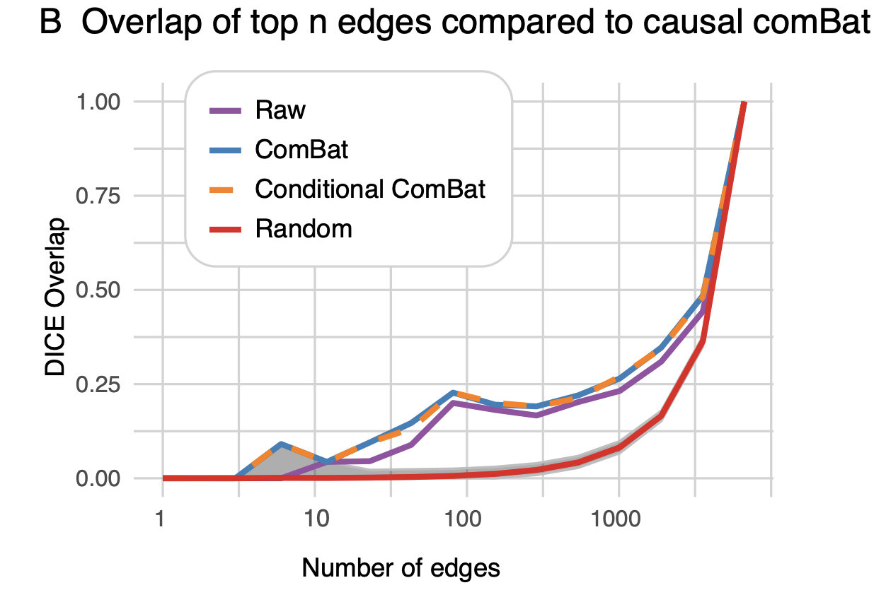 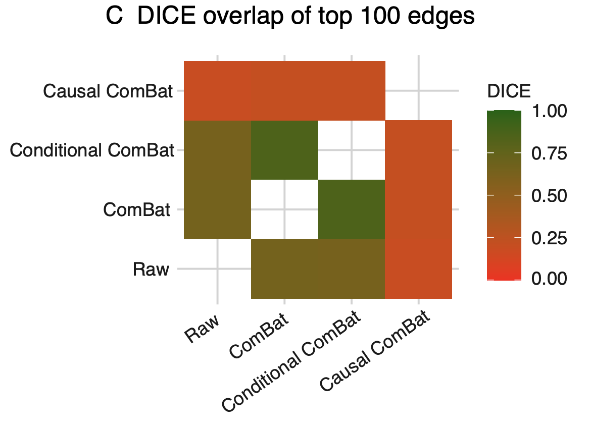 - top edges are very different for Causal ComBat compared to Raw, ComBat, and Conditional ComBat --- ### Paper Link [Batch Effects are Causal Effects](#https://www.biorxiv.org/content/biorxiv/early/2021/09/06/2021.09.03.458920.full.pdf) --- name:discrim ### Outline - [About Me](#me) ### Fun Projects - [Graspologic and Graspologic Book](#graspologic) - [Batch Effects](#batch) - Discriminability - [background](#discrimback) - [toy example](#discrimtoy) - [applications](#discrimconcl) --- name:discrimback ### Outline - [About Me](#me) ### Fun Projects - [Graspologic and Graspologic Book](#graspologic) - [Batch Effects](#batch) - Discriminability - background - [toy example](#discrimtoy) - [applications](#discrimconcl) --- ### What is Reproducibility? - .ye[Reproducibility]: ability to replicate, or reproduce, a conclusion - serves as a "first-pass" check for scientific utility - currently in a "reproducibility crisis" --- ### How do we address the Reproducibility Crisis? - fix post hoc analyses (e.g., $p$-values)? - fix measurements (e.g., measurement reproducibility)? Proposal: design experiments to maximize .ye[inter-item discriminability], rather than simply checking reproducibility after conducting the experiment --- name:discrimtoy ### Outline - [About Me](#me) ### Fun Projects - [Graspologic and Graspologic Book](#graspologic) - [Batch Effects](#batch) - Discriminability - [background](#discrimback) - toy example - [applications](#discrimconcl) --- ### What do we want of our data? If we measure a sample multiple times, then each measurement of that sample is closer to all the other measurements of that sample, as compared to any of the measurements of other samples.  Perfect discriminability --- ### What do we want of our data? Imperfect discriminability  --- ### What do we want of our statistic? Discriminability is the probability of a measurement from the same item being closer than a measurement from a different item.  <!-- --- --> <!-- ### Statistics for Quantifying Reproducibility --> <!-- - most approaches tend to focus on the concepts of between-individual and within-individual summaries --> <!-- -- --> <!-- - parametric approaches --> <!-- - reproducibility is achieved if most of the variability is between-individuals, rather than within-individuals --> <!-- - e.g. Intraclass Correlation Coefficient (.ye[ICC]) and Image Intraclass Correlation Coefficient (.ye[I2C2]) --> <!-- -- --> <!-- - non-parametric approaches - reproducibility is achieved if measurements from the same item are more similar to one another than measurements from different items - e.g. Fingerprinting (.ye[Finger.]) and DISCO (.ye[Kernel]) --> <!-- --- --> <!-- ### Limitations of Existing Reproducibility Statistics --> <!-- - Data: $N$ items in $d > 1$ dimensions measured $s \geq 2$ times each --> <!-- | Statistic | Chief Limitation | --> <!-- | :--- | :--- | --> <!-- | ICC | univariate --> <!-- | I2C2 | does not generalize outside Gaussian framework; estimation issues in high dimensions --> <!-- | Finger. | overly greedy: only look at most similar measurement to the reference measurement --> <!-- | DISCO | struggles when $s$ is small --> <!-- --- --> <!-- ### Discriminability Statistic: Data --> <!-- - $n$ individuals measured $s = 2$ times each, for $N = n\cdot s$ total measurements --> <!-- - generalizes to $s \geq 2$, but $s=2$ is simpler --> <!-- 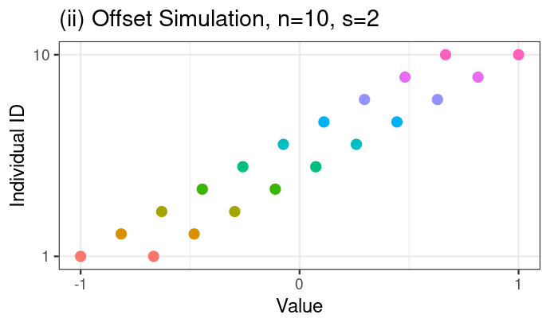 --> --- ### Discriminability Statistic: Step 1 - Compute $N \times N$ pairwise distance matrix between all measurements <!-- - measurements are indexed first by individual identifier, and second by "measurement session" -->   <!-- 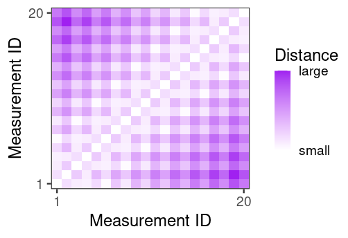 --> --- ### Discriminability Statistic: Step 2 - For each measurement, identify which measurements are from the same individual (<font color="green">green boxes</font>) - let $\color{green}g$ be the total number of <font color="green">green boxes = 20</font> 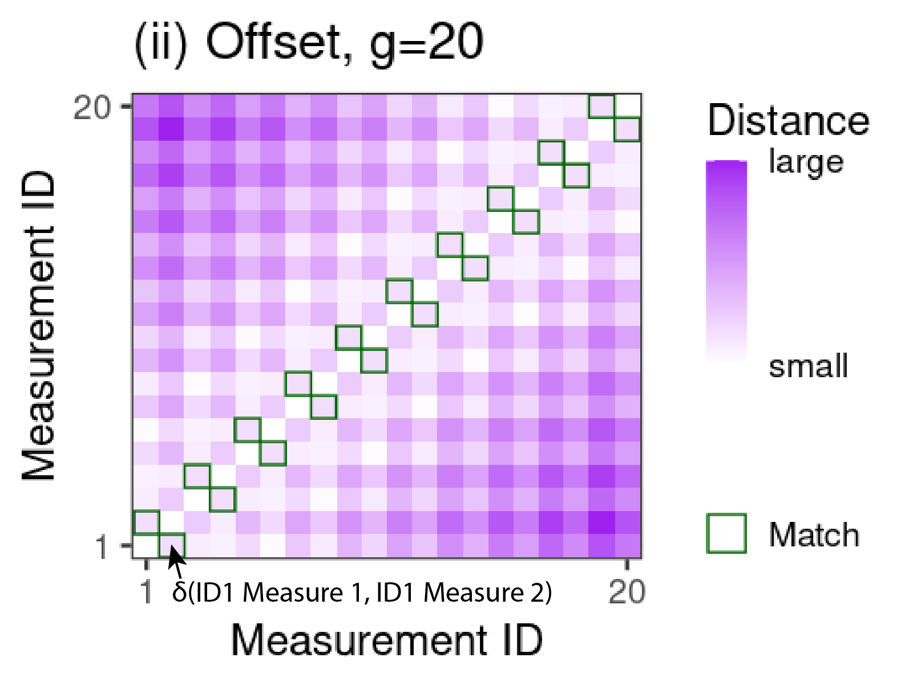 --- ### Discriminability Statistic: Step 3 - For each measurement, identify measurements from other individuals that are more similar than the measurement from the same individual (<font color="orange">orange boxes</font>) - let $\color{orange}f$ be the total number of <font color="orange">orange boxes = 84</font> 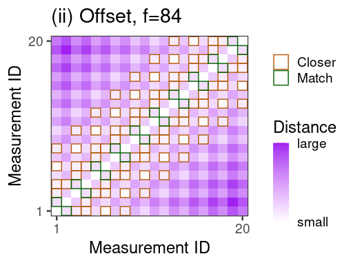 --- ### Discriminability Statistic - Discr = $1 - \frac{\color{orange}f}{N(N-1) - \color{green}g} = 1 - \frac{\color{orange}{84}}{20\cdot 19 - \color{green}{20}} \approx .77$ 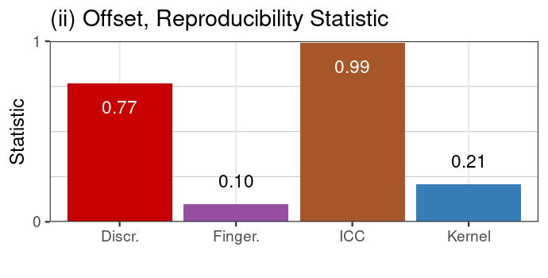 High discriminability: same-item measurements are more similar than across-item measurements --- ### Discriminability is Construct Valid 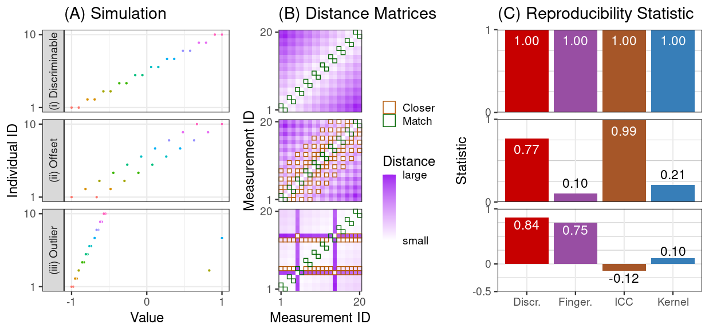 <!-- - under the given construct (what the simulation is supposed to show), discriminability provides a sensible statistic --> <!-- - other approaches do not --> --- name:discrimconcl ### Outline - [About Me](#me) ### Fun Projects - [Graspologic and Graspologic Book](#graspologic) - [Batch Effects](#batch) - Discriminability - [background](#discrimback) - [toy example](#discrimtoy) - applications --- ### What data will we be using? - CoRR metadataset - $N>1,700$ individuals imaged across $26$ different datasets - anatomical MRI and fMRI scans for each - Individuals are measured at least twice --- ### Analysis Procedure Process each measurement using $192$ different pipelines 1. Brain alignment (ANTs/FSL) 2. Frequency filtering (Y/N) 3. Scrubbing (Y/N) 4. Global Signal Regression (Y/N) 5. Parcellation (4 options) 6. Rescaling connectomes (Raw, Log, Pass-to-Rank) $192 = 2 \times 2 \times 2 \times 2 \times 4 \times 3$ All options represent strategies experts consider useful --- ### Pipeline impacts discriminability <center>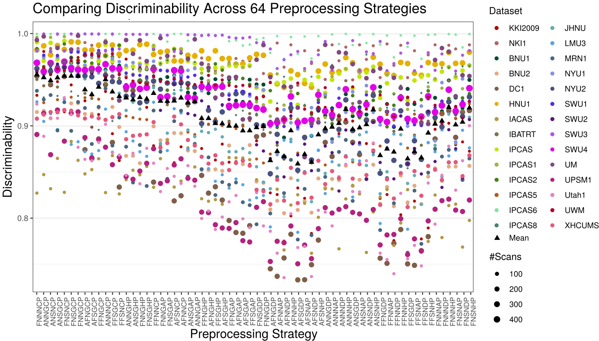</center> <!-- - Consequence: choosing how to pre-process your data matters --> --- ### Marginally most discriminabile options tend to be best global options <center>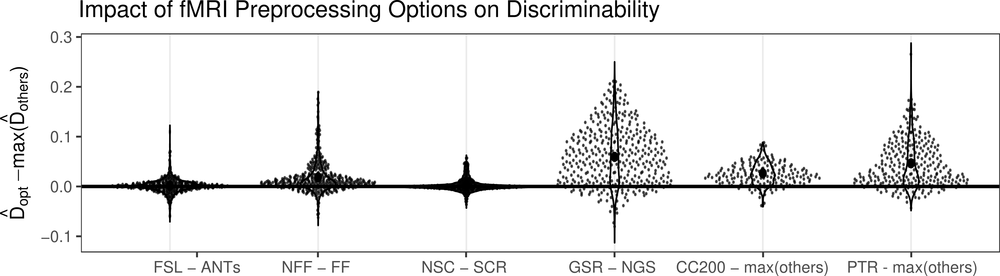</center> - Each point is the pairwise difference holding other options fixed (e.g., FNNGCP - ANNGCP) - Best pipeline marginally (FNNGCP) is second best pipeline overall, and not much worse (2-sample test, p=.14) than the best pipeline FNNNCP - We may not need to always try every pre-processing strategy every time --- ### Selection via Discriminability improves inference For each pre-processing strategy, for each dataset, compute: 1. Within-dataset Discr. 2. Demographic effects (sex and age) within the dataset via Distance Correlation (DCorr) 3. Within a single dataset, regress demographic effect on Discr. Question: does a higher discriminability tend to yield larger effects for known biological signals? --- ### Selection via Discriminability improves inference 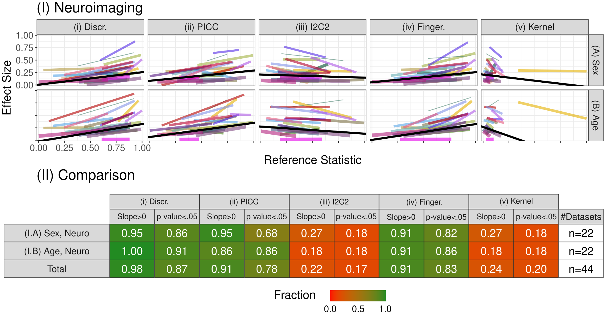 <!-- - Consequence: maximizing discriminability in general improves downstream inference --> --- ### Paper Link [Discriminability Paper](#https://journals.plos.org/ploscompbiol/article/peerReview?id=10.1371/journal.pcbi.1009279)